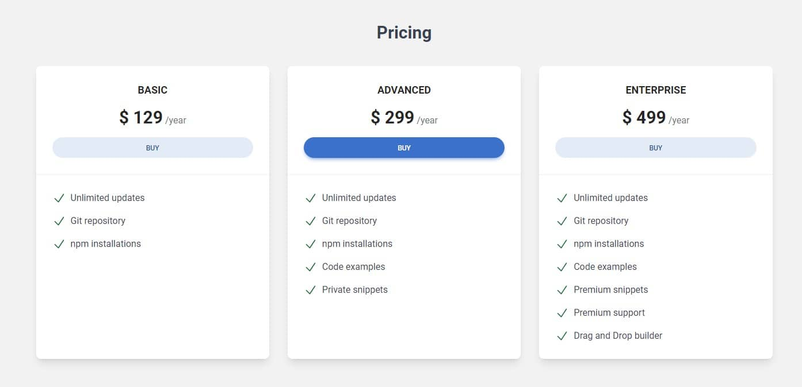

I don't know if you've noticed, but when we moved our cards to external
divs serving as columns in the grid, they stopped having the
same height.
This is how it looked when the cards served as columns at the same time:

By default, the card's height is defined by its content (that is, the card's
height will adjust to the amount of content you add to it) so this is what
it looks like now that we've moved the columns to the outer
divs:
This is because only elements that are direct children of the grid have their height set to 100%.
And if we add the .bg-red-500 class to the columns to make them
visible, we see that they are actually still stretched to their full
available height and are equal to each other.
It would be good to make the cards still the same height. This is a good opportunity to talk about sizing utilities.
Width is controlled using the w prefix followed by a unit or
value.
The pattern continues up to .w-96 for 24rem, and
then there are some specific larger sizes:
.w-1
.w-2
.w-3
.w-4
.w-6
.w-8
.w-10
However, the most useful are relative sizes, where we can set the height or width relative to the parent:
Height works the same way as width, but instead of w we use
h prefix
Let's set the cards to full height. We'll do this by adding the
h-full class to the divs with our pricing cards.
Do the same with the other two cards and after saving the file, you should see that the cards are now the same height.